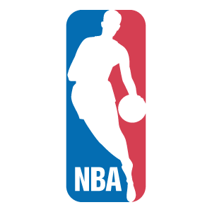

<!--
  Generated template for the StatsPage page.

  See http://ionicframework.com/docs/components/#navigation for more info on
  Ionic pages and navigation.
-->
<ion-header>

  <ion-navbar color="primary">
    <ion-thumbnail>
      
    </ion-thumbnail>
    <ion-title align-title="center">NBA STATS</ion-title>
    <ion-searchbar [(ngModel)]="searchInput" [showCancelButton]="shouldShowCancel" (ionInput)="filterPlayers($event)" (ionCancel)="onCancel($event)">
    </ion-searchbar>
  </ion-navbar>
</ion-header>


<ion-content>
  <ion-label padding>LeadersBy:</ion-label>

  <ion-select margin-top (ionChange)="changeCategory()" [(ngModel)]=category name="category">
    <ion-option value="PTS">PTS</ion-option>
    <ion-option value="AST">AST</ion-option>
    <ion-option value="REB">REB</ion-option>
    <ion-option value="STL">STL</ion-option>
    <ion-option value="BLK">BLK</ion-option>
  </ion-select>

  <ion-item>
    <label item-start>Season: 2017-18</label>
    <h3 item-end>{{ category }}</h3>
  </ion-item>
  <ion-scroll scrollY="true" scrollX="false">
    <ion-item class="player-item" *ngFor="let player of shownPlayers" ion-item (click)="goToPlayer(player)">
      <h4 item-start>{{player.rank}}.</h4>
      <ion-avatar item-start>
        
      </ion-avatar>

      <h3 text-wrap>{{player.player}}</h3>
      
      <h2 item-end *ngIf="category=='PTS'">{{player.pts}}</h2>
      <h2 item-end *ngIf="category=='REB'">{{player.reb}}</h2>
      <h2 item-end *ngIf="category=='AST'">{{player.ast}}</h2>
      <h2 item-end *ngIf="category=='STL'">{{player.stl}}</h2>
      <h2 item-end *ngIf="category=='BLK'">{{player.blk}}</h2>

    </ion-item>

  </ion-scroll>

  <ion-infinite-scroll (ionInfinite)="doInfinite($event)">
    <ion-infinite-scroll-content></ion-infinite-scroll-content>
  </ion-infinite-scroll>

</ion-content>